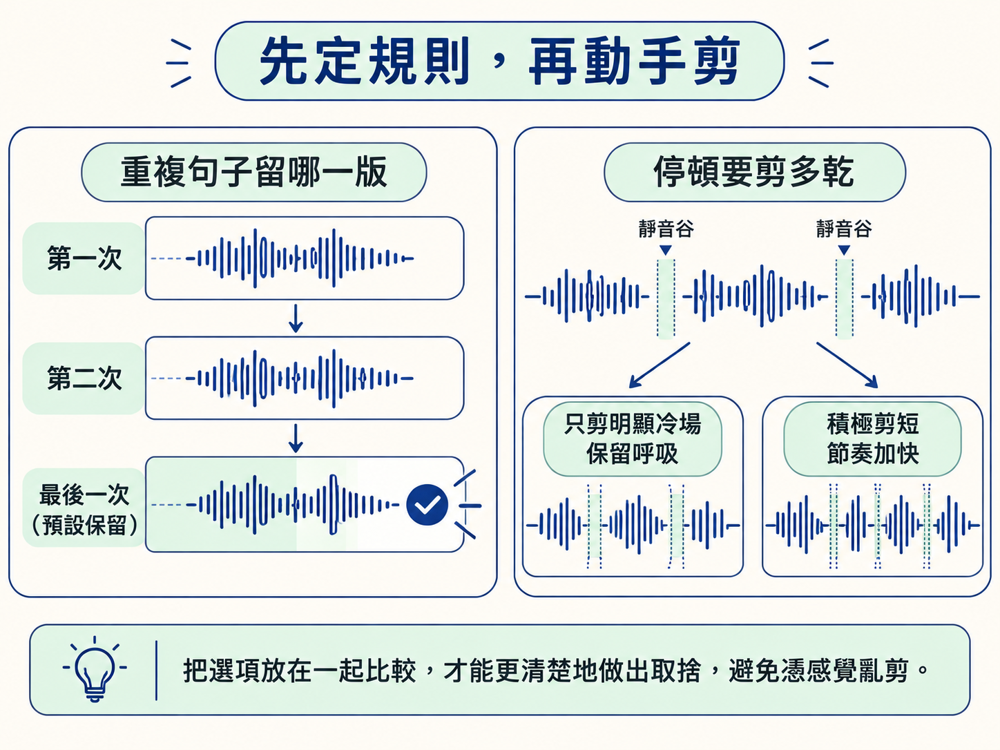
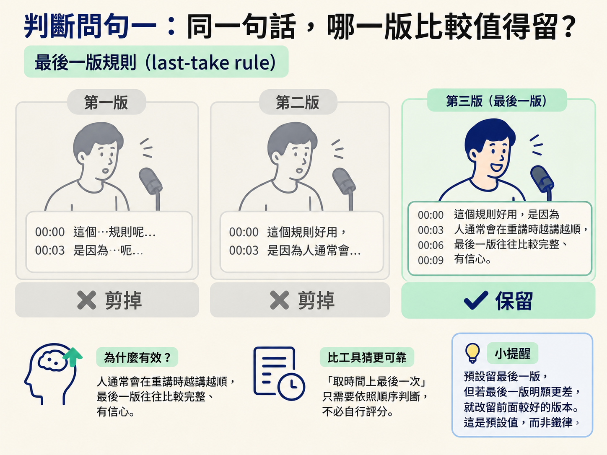
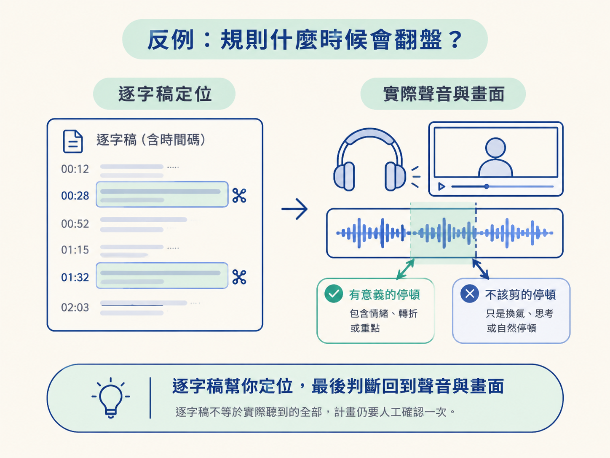

一段談話錄完，逐字稿也有了，真正麻煩的地方才剛開始：停頓要剪掉多少？講錯後重來的片段要留哪一次？如果沒有先定規則，剪輯很容易變成憑手感亂切，最後不是留下卡詞的版本，就是把不同段落拼得不像原本的說話方式。
這一課要先做一個核心決定：哪些片段該拿掉，以及同一句話重複出現時該留下哪一版。這一步在整條剪輯流程的最前面。規則定清楚後，後面用 ffmpeg 剪片，就只是把判斷翻譯成指令，產出一串可執行的保留區間（keep ranges）。
你應該能根據兩條原則，從逐字稿判斷每個句子該留哪一版、哪些片段該剪掉：
最後，把判斷結果整理成一串保留區間，交給下一步的剪輯流程。
剪輯時真正要決定的，通常是兩種取捨：重複的句子要留哪一版，以及停頓要剪得多乾。把它們放在一起比較，會比較好決定。

| 要決定的事 | 選項 | 什麼時候適合 |
|---|---|---|
| 重複的句子留哪一版 | 留第一次 | 後面幾次反而更卡、更不完整時 |
| 留最後一次（預設） | 重講後愈講愈順、最後一版最乾淨時 | |
| 靜音停頓剪多少 | 只剪明顯冷場，保留呼吸 | 想保有自然談話感、不想讓節奏太緊繃時 |
| 積極剪短，讓節奏加快 | 短影音或需要高密度資訊時 |
這張表的重點是：最後一版是預設，不是永遠不能改的答案；靜音也不是越少越好。規則是用來減少逐句判斷的負擔，不是把你綁死。
動手前先記住最高原則：你只能拿掉東西，不能改變說話的順序，也不能改寫你說過的字。剪輯的工作是刪除不要的內容，不是重新創作一份講稿。
當 agent 幫你剪片時，這條規則通常會直接寫在提示詞裡，例如「only remove things. never reorder or rewrite what I said.」。
為什麼這麼重要？因為一旦允許重排或重寫，工具就有可能為了讓句子更順，把兩段話對調，或把你的用詞換成它認為更好的說法。最後留下的就不再是「你說過的話」，而是「它替你改寫的稿」。對談話型內容來說，這會影響可信度，也讓你無法再用逐字稿核對畫面。
剪輯規則不是靠猜，而是靠逐字稿判斷。逐字稿的重要價值，在於它記錄每個字出現的精確時間，也就是逐字時間碼（word-level timestamps）。有了這些時間資訊，你才能回頭比對哪一段是重講、哪一段停太久，最後把判斷轉成時間區間。
通常要刪掉的片段分成兩類：
重錄（retake）通常會在逐字稿裡留下重複痕跡。常見情況包括：講到一半停住後接著說完整句、同一句裡「因為」講了兩次，或直接說出「讓我重來一次」。
這時使用最後一版規則（last-take rule）：同一句話說了幾次，就預設只保留最後一次，前面的嘗試全部剪掉。假設一句話講了三遍，預設就留第三遍。
這個規則好用，是因為人通常會在重講時越講越順，最後一版往往比較完整、有信心。而且「取時間上最後一次」比讓工具猜「哪一版最好」可靠，因為它只需要依照順序判斷，不必自行評分。

不過，最後一版不是不可推翻的鐵律。如果你已經累了，後面那一次反而變得零碎，前面的一版明顯比較好，就應該留前面那一版。剪掉 NG 後，畫面會直接跳到下一句，因此預覽時也要確認接起來仍然通順。
停頓不能一律剪光。剪輯腳本通常會設定一個門檻，例如音量低於 -32 分貝、持續超過 0.25 秒，才視為靜音；也可以改成 -30 分貝搭配 0.4 秒，代表更積極地剪短停頓。
真正要保留的是呼吸感。剪接點兩側保留極短的一小段，大約 0.04 到 0.1 秒，聽起來才自然，不會像機器人突然換氣。
所以面對靜音時，你要做的不是二選一的「剪」或「不剪」，而是決定剪到什麼程度。想保留自然談話感，就只處理明顯冷場；想讓短影音節奏更快，才採取比較積極的剪法。
這是最後一道防線。實際檢查每個候選片段時，可以依序問自己：
只要一個動作會讓內容順序或語意產生變化，就應該退回來，確認自己做的仍然只是刪除。
第一個反例是接縫太乾。假設你嚴格照著「只留下講話聲音」執行，把每個停頓都削到見骨，成品會變得很急促，像有人按著快轉鍵講話。這時候繼續多剪靜音，反而會讓品質變差；正確做法是把接縫兩側的呼吸加回來。
第二個反例是逐字稿不一定完全等於你實際聽到的內容。它可能把含糊的字辨識成別的字，也可能漏掉很小聲的語助詞。如果只照文字判斷，就可能誤剪掉其實有意義的停頓或片段。
因此，規則產出的計畫仍然要用眼睛和耳朵確認一次。逐字稿負責幫你定位，最後的判斷則要回到實際聲音與畫面。

剪輯只做刪除，不重排、不重寫。要刪的是技術性雜訊，例如停頓、咳嗽與冷場，以及內容性錯誤，例如講錯和重來。同一句話重複時，預設保留最後一版；但如果最後一版明顯更差，就改留前面較好的版本。停頓不要剪到見骨，接縫兩側留一點呼吸。最後，把這些判斷整理成一串保留時間區間，作為下一步 ffmpeg 指令的原料。
規則定好後，下一步就是把保留區間變成可執行的指令，交給 ffmpeg 使用 trim、atrim 與 concat，把片段接成一支 cut.mp4。